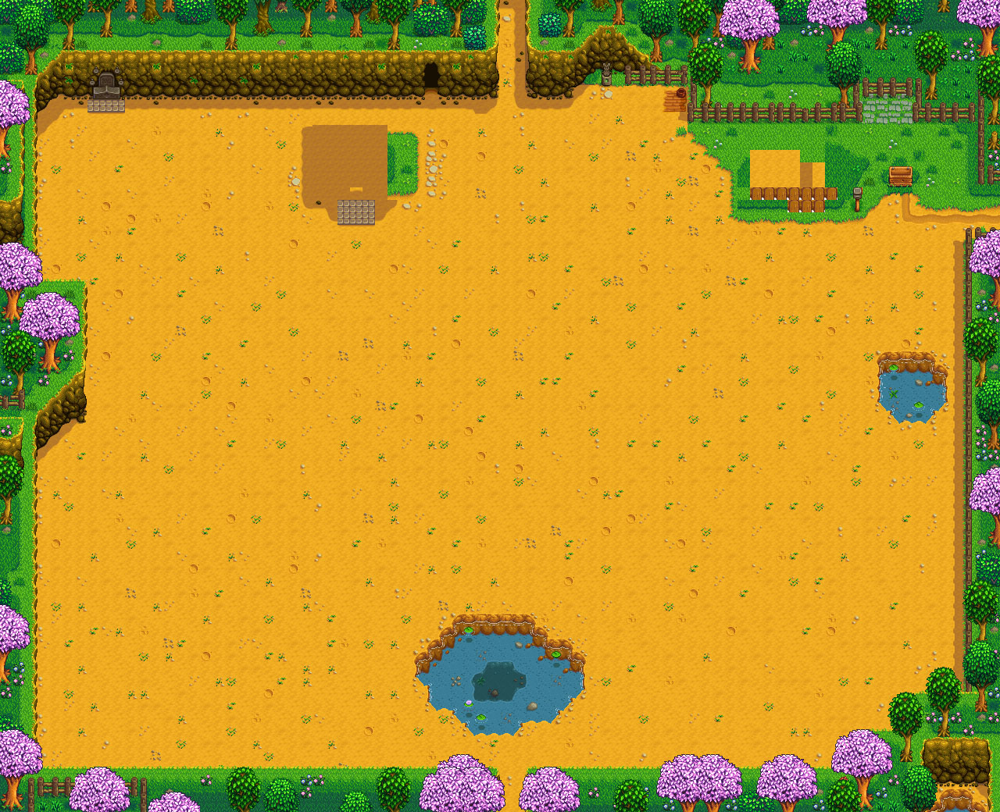

Seed Maker Simulator


{{x}}, {{y}}
{{ currentProfile.name }}
Game ID:
Year:
Season:
Day:
Days Played:
Seed Makers:
{{ currentProfile.gameID }}
{{ currentProfile.year }}
{{ SEASONS[currentProfile.season-1].name }}
{{ currentProfile.year }}
{{ currentProfileDaysPlayed }}
{{ currentProfileSeedMakerCount }}
Your game save has this number writen in its file name.
You can find it at AppData/Roaming/StardewValley/Saves
You can find it at AppData/Roaming/StardewValley/Saves

{{ iSeason.name }}
{{ daysPlayed }}
Zero seed makers in the map.
Add some to generate day.
Add some to generate day.
Buy me a
!
Filters:
1
Filter: 1 Same Seeds
(the one inserted into the seed maker)
2
Filter: 2 Same Seeds
(the one inserted into the seed maker)
3
Filter: 3 Same Seeds
(the one inserted into the seed maker)

Filter: Mixed Seeds

Filter: Ancient Seed

Filter: Empty Hours
X: {{ seedmaker.x }}
Y: {{ seedmaker.y }}
Seed Maker #{{seedmaker.index + 1}}
(x: {{seedmaker.x}}, y:{{seedmaker.y}})
(x: {{seedmaker.x}}, y:{{seedmaker.y}})
{{ DAYHOURS[i] }}
{{ isSeedVisible(seed) ? seed.amount : '' }}
Same Seed{{seed.amount > 1 ? 's' : ''}}: {{ seed.amount }}
{{ seed.amount }}
Mixed Seed{{seed.amount > 1 ? 's' : ''}}: {{ seed.amount }}
Ancient Seed: {{ seed.amount }}
Server failed to
calculate this value.
calculate this value.